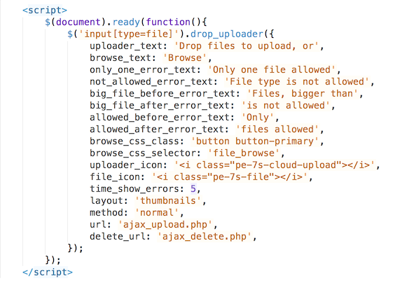
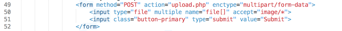

Created: 07/06/2016
By: Horishilow Boris
Email: support@borisolhor.com
Thank you for purchasing my item. If you have any questions that are beyond the scope of this help file, please feel free to email via my user page contact form here. Thanks so much!
To use this plugin you must include following files:
Note: You must include jQuery plugin before drop_uploader.js file.
You can use another icons (instead pe-7). In this case you need to set other icon params in plugin options.
Also you need to include following script to activate drop uploader
You need apply drop_uploader method to your input field with type file.
To start use this plugin just include script files (javascript and CSS from drop uploader and also jQuery plugin and icons) and copy example code, which you can find in index.html file. After that you can change form fields, file uploading options and so on.
Drop Uploader have some options, that you can find here:
uploader_text - File uploader description text
browse_text - Browse file text
only_one_error_text - Only one file allowed error text
not_allowed_error_text - File type is not allowed error text
big_file_before_error_text - Files, bigger than is not allowed error text (before file size)
big_file_after_error_text - Files, bigger than is not allowed error text (after file size)
allowed_before_error_text - Only FILETYPE files allowed error text (before file type)
allowed_after_error_text - Only FILETYPE files allowed error text (after file type)
browse_css_class - Browse file link classes
uploader_icon - Icon before description text
file_icon - File icon in file upload list
time_show_errors - Time in seconds, before error text is disappear. Set to 0 to disable error disappearing.
layout - Method, how to display selcted files in drop Uploader. Can be List or Thumbnails (by default).
method - Method, how to upload files to the server. Can be ajax or normal (by default).
url - URL for AJAX file uploading request.
delete_url - URL for AJAX file deleting request.
Drop Uploader supports default file input attributes, such as multiple and accept. You can use these attributes to in control file uploading via Drop Uploader.
Also you can add file size limit by adding attribute data-maxfilesize (maximum file size in bytes) or by adding hidden input field with name MAX_FILE_SIZE before file input tag.
Note: PHP server also have max file size restriction. See more info here.
You can set file list layout by adding attribute data-layout (it can be thumbnails or list). This field will overwrite global Drop Uploader settings
You can set file upload method by adding attribute data-method (it can be normal or ajax). This field will overwrite global Drop Uploader settings. Also if you use AJAX method, you also can set data-url and data-deleteurl attributes here.
You can set file uploading limit by adding attribute data-count.
To transfer files to server you need to set form enctype="multipart/form-data" attribute. Also you need to add function, that will recieve files on server side. You can see working PHP example in upload.php file. For AJAX file uploading you can see working examples in ajax_upload.php file. ajax_delete.php file is used to delete files, that was uploaded via AJAX.
There is two JS events, that you can listen: file_upload_start and file_upload_end. This events is only available in AJAX mode. As additional parameter you can get uploaded file name.